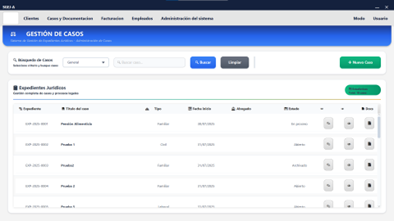
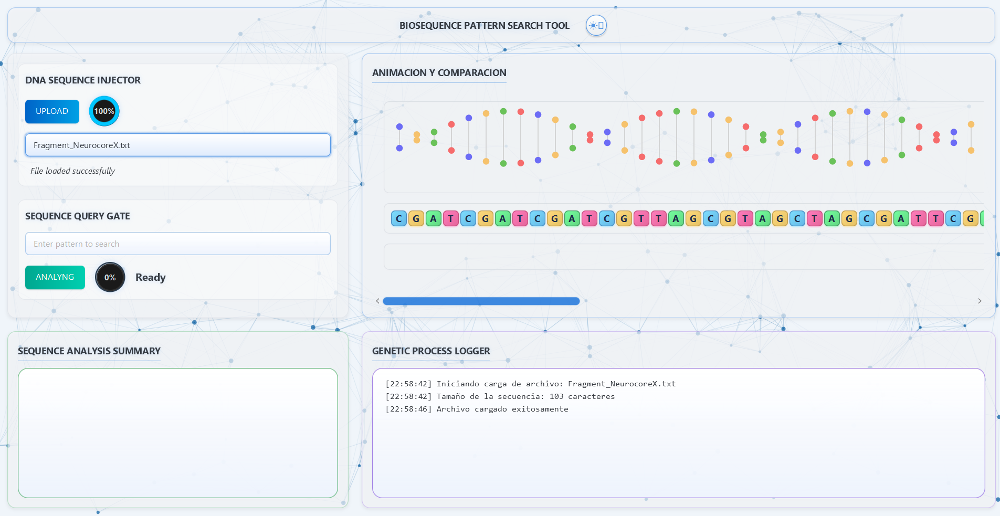
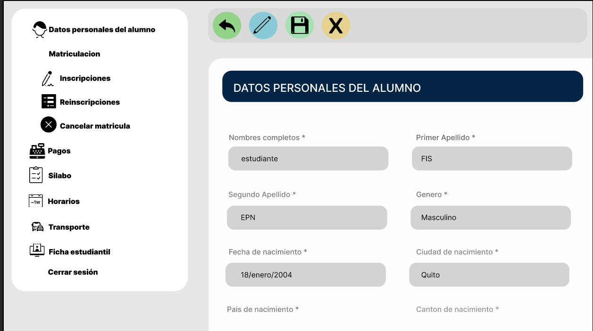
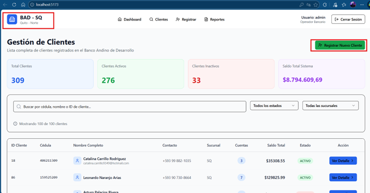
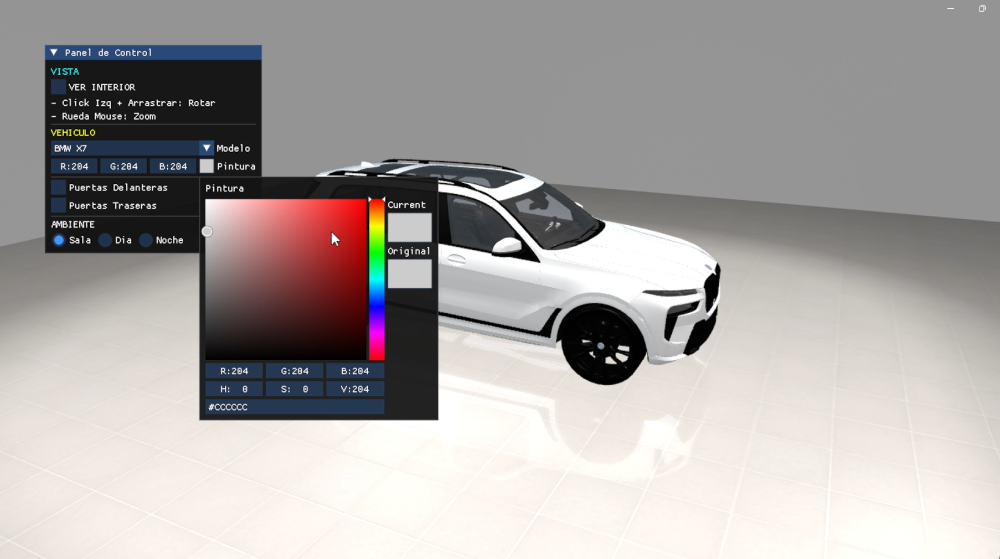

Portafolio
A continuación presento algunos de los proyectos que he desarrollado durante mi formación en Ingeniería en Desarrollo de Software. Estos reflejan mis conocimientos en programación, diseño de software y desarrollo de aplicaciones.
Proyectos Destacados
|
Sistema de Gestión
Jurídico  Aplicación para gestión de procesos legales. Tecnologías: Java, JavaFX, SQL Repositorio |
Boyer Moore Matcher
Visual  Aplicación visual de algoritmo de búsqueda. Tecnologías: Java, JavaFX Repositorio |
Sistema de Gestión de
Choferes  Sistema de administración de conductores. Tecnologías: Java, SQLite Repositorio |
|
App Web con BD
Distribuidas  Aplicación web con bases de datos distribuidas. Tecnologías: Spring, Java, SQL Repositorio |
CarShowroom  Visualización de vehículos. Tecnologías: OpenGL, C++ Repositorio |